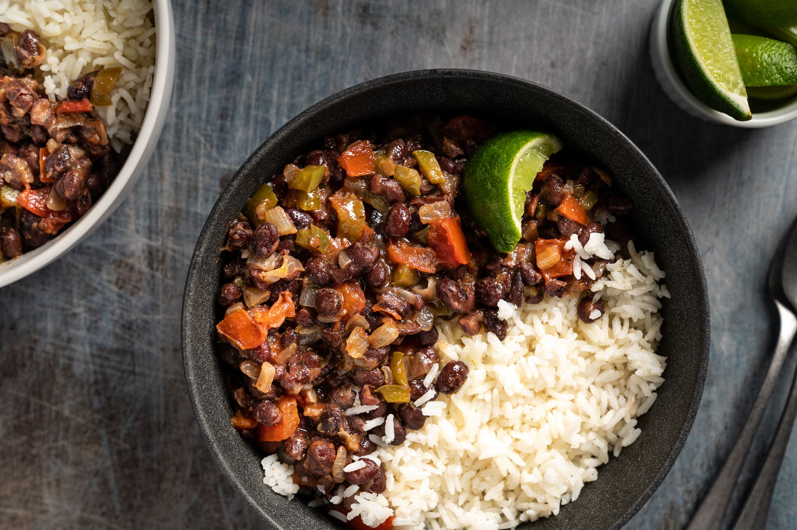

Homepage
General cauliflower
Lasagna
Vegetarian Black Bean

Description
I don't say this lightly. This truly is the BEST Vegan Lasagna! Layered with a tofu-cashew ricotta, red
lentil marinara and loads of fresh spinach, this lasagna is protein packed with 26 grams per serving and is
sure to satisfy!
THE BEST VEGAN LASAGNA. After trying many different vegan lasagnas over the years since giving
up animal products, I have finally come up with the WINNING RECIPE! At last, a lasagna that my whole family will
eat without complaining.
Ingredients
- 1 cup dried lentils
- 25-ounce jars marinara sauce
- 1 cup of raw cashews
- 16 ounce firm tofu
- 1/2 nutritional yeast
- 3 tbsp fresh lemon juice
- 1 tsp salt
Steps
- First cook your lentils
- Preheat the oven to 350 degrees
- Make the Cashew-Tofu Ricotta: add the cashew to a food processor and process until fine and
crumbly
- Assembling the lasagna: add about 1 cup of marinara sauce to the bottom or a large
casserole dish
- Cover tightly with foil